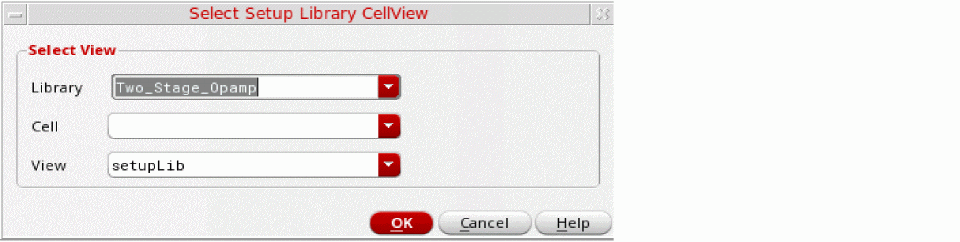
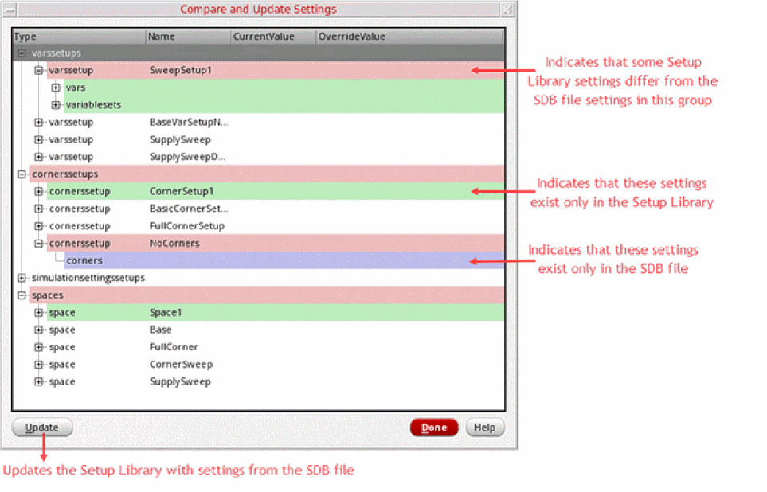

7
Verifying the Design Against the Specified Setup
When you manage a project, before proceeding with the sign-off for each block, you need to ensure that all the blocks successfully meet the specified setup requirements, which include variables, corners, and so on.
The Setup Library assistant helps you define a project-specific (master) setup for the design blocks in ADE Assembler and then reuse the specified setup to create or modify the current simulation setup in the Data View assistant. The setup in this assistant is generic and can be applied on any design. The Setup Library assistant can be accessed using ADE Assembler and ADE Verifier.
Following are the main tasks that you can perform using this assistant:
- Specify a master project-specific setup, which includes sweep variables, corners, model files, and so on.
-
Save the specified setup in a cellview independent of the
maestroview, and thus can be conveniently shared with designers working on different blocks. - Create a verification space and then use these spaces to calculate the coverage percentage in ADE Verifier.
The scope and capabilities of this assistant are defined based on your work requirements and the platforms you are working on:
- If you work at the design level (block-level) for analog designing, then you can open this assistant in ADE Assembler to reuse the specified setup to create the setup in the Data View assistant.
-
If you work on the top-level design verification (managing the overall project), then you can open this assistant in ADE Verifier to create verification spaces and ensure full coverage of the analog design blocks.
In ADE Verifier, you can open the Setup Library assistant, load a predefined Setup Library cellview, create verification spaces, and then assign these spaces to different blocks in ADE Verifier. You can then calculate the coverage percentage and generate a coverage report to ensure that whether the specified setup values in verification spaces are run or not.
For more information on how this assistant works in Virtuoso ADE Assembler, see
Related Topics
Setup Library Assistant Workflow
Graphical User Interface of Setup Library Assistant
Coverage Calculation in Virtuoso ADE Verifier
Running Simulations with Verification Spaces
Updating Implementation Cellviews with Verification Spaces
Setting ADE Verifier Preferences for Coverage
Setup Library Assistant Workflow
The following figure illustrates how you can use the Setup Library assistant in ADE Assembler and ADE Verifier.
The following figure describes the analog design verification workflow in ADE Verifier:
Opening the Setup Library Assistant
You can open the Setup Library assistant using ADE Assembler and ADE Verifier.
To open Setup Library assistant using ADE Verifier, do one of the following:
- Right-click anywhere on the menu bar or toolbar area and choose Assistants – Setup Library.
-
Click the Setup Library Assistant icon (
 )
)
Alternatively, choose Windows – Assistants – Setup Library.
The Setup Library assistant appears on the right of the ADE Verifier window.
Graphical User Interface of Setup Library Assistant
The Setup Library assistant includes a toolbar and an interface for defining and displaying the setup elements. The figure below explains the graphical user interface of this assistant:
Setup Library Assistant Toolbar
The following table describes the buttons and options available on the toolbar of the Setup Library assistant.
Creating or Loading a Setup Library Cellview
To open a Setup Library cellview:
-
Click the folder icon (
) on the toolbar.
The Select Setup Library CellView form appears.
 - In the Library and Cell lists, select a library and a corresponding cell.
-
In the View list, all the existing cellviews of type
setupLibare displayed. By default, the view type is displayed assetupLibwhen you open the form. - Click OK.
The specified Setup Library cellview is created or loaded in the Setup Library assistant.
The new Setup Library cellview you create is saved and displayed in the View section of Library Manager. For example, if you create a new cellview SetupLib for library Two_Stage_Opamp and cell OpAmp_AC_top, this cellview is displayed in the Library Manager window.
Modification of the Setup Library Cellview
When a new Setup Library cellview is created, it does not include any setup elements. You need to edit the setup to add elements to that cellview. You might also want to modify an existing setup to add, delete, or modify elements.
By default, all the corners or variables in the Setup Library Assistant are considered enabled even if the set of variables or corners that are dragged into or imported in the Setup Library Assistant are disabled.
In all operations related to creating or editing setups, valid characters must be used to specify the name of the sweep, corner, or simulation setup. Invalid characters include the following:
space, *, =, <, >, ?, |, ', \, ", ~, (, ), /, and ; .
You can create a new project-specific setup, which includes sweep and corners, using ADE Assembler. For information about how to add new sweep and corner combinations in ADE Assembler, see
Once the setup is created and saved in a Setup Library cellview, you can open the cellview in ADE Verifier and calculate the coverage to check the completeness of the project setup requirements.
Related Topics
Importing Sweeps and Corners in the Setup Library
Adding New Sweep Setups
To add a new sweep setup, do one of the following:
- Right-click Sweep Setups and choose Create Sweep Setup.
-
Expand the Sweep Setups node and click the
Click to add SweepSetuptext.
The sweep setup is added and displayed in the node hierarchy. The default sweep setup name is SweepSetup1. You can also rename it if required.
Ensure that the sweep setup name is a non-empty string which is not '.' or '..' and does not contain whitespaces or the characters: '~\\*/<>'?|\"()=;&$'."
After the sweeps are added in the Setup Library assistant, you can edit them by double-clicking the sweep name and sweep value.
To add a sweep variable in this sweep setup:
-
Right-click the sweep setup name, such as
SweepSetup1, and choose Add New Sweep Variable.
The Add Variable form appears in which you can specify the sweep variable name and value.
The specified variable is listed under SweepSetup1 in a new row.
To delete the entire sweep setup:
Adding New Corner Setups
To add a new corner setup, do one of the following:
- Right-click Corner Setups and choose Create Corner Setup.
-
Expand the Corner Setups tree and click the
Click to add CornerSetuptext.
The corner setup is added and displayed in the hierarchy. The default corner setup name is CornerSetup1. You can also rename it if required.
Ensure that the corner setup name is a non-empty string which is not '.' or '..' and does not contain whitespaces or the characters: '~\\*/<>'?|\"()=;&$'."
After the corner is added in the Setup Library Assistant, you can do one of the following:
- Import corners from a CSV file by right-clicking the corner setup name and selecting Import Corners.
- Add the corner in the ADE Assembler Setup that uses the same Setup Library cellview. See Adding New Corner Setups.
To add a corner variable in this corner setup:
The Add Variable form appears in which you can specify the corner variable name and value.
The specified variable is listed under CornerSetup1 in a new row.
To add a model file in this corner setup:
The Choose Model File window appears in which you can specify the model file name.
To delete the entire corner setup:
Adding New Simulation Setups
To add a new simulation setup, do one of the following:
- Right-click Simulation Setups and choose Create New Monte Carlo Setup.
-
Expand the Simulation Setups node and click the
Click to add SimulationSetuptext.
The Monte Carlo simulation setup is added and displayed in the Simulation Setups section. The default name of the new simulation setup isMonte Carlo Setup1, which you can rename as required.
Ensure that the corner setup name is a non-empty string which is not '.' or '..' and does not contain whitespaces or the characters: '~\\*/<>'?|\"()=;&$'."
The setup contains the variables Number of Points, Variation, Sampling Method, Seed, Netlist Options, and Reliability Mode.
You can specify custom values for the variables in the simulation setup that will let you run a Monte Carlo simulation.
To specify values for the variables in the simulation setup:
- Double-click the Number of Points variable row and specify the number of points.
- From the Variation list, select the method. Possible values are All, Mismatch, and Process.
- From the Sampling Method list, select the mode. Possible values are Random, Latin Hypercube, and Low-Discrepancy Sequence.
- Double-click the Seed variable row and specify the seed value.
- Double-click the Netlist Options variable row and specify the netlisting option.
- From the Reliability Mode list, select the reliability mode. Possible values are Single stress (1+N) and Multi stress (N+N).
The specified variable values are listed in the Monte Carlo Setup1 group. You can double-click the displayed variable value to change it directly in the variable row.
You can add more simulation setups in your setup library view.
When you drag a Monte Carlo simulation setup from the Setup Library assistant to the Data View assistant in ADE Assembler, the run mode changes to Monte Carlo Sampling. Accordingly, the run options are displayed in the Monte Carlo form. The form shows the values that you have specified in Monte Carlo Setup1.
To delete a specific simulation setup from the Setup Library assistant:
To view all the variables in a simulation setup:
To hide all the variables in a simulation setup:
Adding New Reliability Setups
To add a new reliability setup, ensure that the setup library cellview is editable and do one of the following:
- Right-click Reliability Setups and choose Create New Reliability Setup.
-
Expand the Reliability Setups node and click the
Click to add Reliability Setuptext.
A new reliability setup is added and displayed in the Reliability Setups section. The default name of the new reliability setup is ReliabilitySetup1, which you can rename as required. The second reliability setup that you create, is by default named ReliabilitySetup2, and so on.
Ensure that the reliability setup name is a non-empty string, which is not '.' or '..' and does not contain whitespaces or these unsupported characters: '~\\*/<>'?|\"()=;&$'."
To add reliability options to a reliability setup, do one of the following:
-
Right-click the setup name and select Add New Reliability Options.
The default name of the first set of reliability options isReliability1. You can add more reliability options in your reliability setup. The second reliability options node that you add is suffixed with an incremental numberReliabilityN, to keep it unique. -
Drag one or more reliability options from Data View in ADE Assembler and drop them to any reliability setup or reliability options node in the setup library cellview.
This process copies all information except the test name, stress file, config type, model files, and placement type. If the Reliability Setups group contains multiple reliability options, you can enable the required options and disable the others.
To enable or disable a set of reliability options, do one of the following:
- Right-click the reliability options node and select Enable to enable the reliability options. Alternatively, select the check box for this set of reliability options.
- Right-click the reliability options node and select Disable to disable the reliability options. Alternatively, deselect the check box for this set of reliability options.
The Enable and Disable commands are available for multiple selection when the setup library cellview is editable.
To edit the reliability options in a reliability setup:
-
Right-click the reliability options node and select Edit Reliablity Options.
The Edit Reliability Options command is only available when the setup library cellview is editable.
The Reliability Options form is displayed.

This form is the same as the Reliability Options form that is opened from the Data View in ADE Assembler. The form name is suffixed with the names of the reliability setup and reliability options in the following format.
Reliability Setup_name:ReliabilityOptions_name
All options in this form are set to the default values that are read from the spectre/.cdsenv file. You can modify the values, if required.
To view the reliability options in the read-only mode:
-
Right-click the reliability setup name and choose View Reliability Options.
This command is available only when the setup library view is in read-only mode. It is not available when you select multiple reliability options.
The Reliability Options form is displayed in view-only mode. The OK, Defaults, and Apply buttons are disabled. This means that even if you modify any values in the form, the settings are not saved in the reliability setup.
To delete a specific reliability setup from the Setup Library assistant:
To view all the reliability options in a reliability setup:
To hide all the reliability options in a reliability setup:
Importing Sweeps and Corners in the Setup Library
-
Right-click the sweep setup name, such as
SweepSetup1, in the Setup Library assistant and choose Import Sweeps.
The Open File window appears in which you can specify the CSV or SDB file containing the sweep setup. If the imported file contains parametric sets, the row containing the parametric set details must contain the same number of fields as those of the variables.
Similarly, to import a corner setup:
The Open File window appears in which you can specify the CSV or SDB file containing the corner setup.
- If a variable already exists with the same name as that of a variable being imported, it is overwritten by the imported variable.
- The enabled or disabled status of the imported variable is also imported and set accordingly.
- If the information about parametric sets is available in the CSV file, the parametric sets are also created after importing the variables.
Exporting and Importing SDB Setups
You can export the sweep setups, corner setups, simulation setups, and verification spaces from an open setup library view to an SDB file, which is also saved within the same setup library cellview. Similarly, you can import the sweep setups, corner setups, simulation setups, and verification spaces from an SDB file to an open setup library view.
-
In the Setup Library assistant toolbar, click Export setups to SDB file.
The Specify a File dialog appears. -
Specify the
.sdbfile to which the setups must be exported. - Click Save.
All setups from the setup library cellview are exported to the specified SDB file.
-
In the Setup Library assistant toolbar, click Import setups from SDB file.
The Import from SDB File form appears.
-
Specify a
.sdbfile from which the setups must be imported. - Click Merge to merge the new and modified settings from the SDB file into the Setup Library. In this case, no visual indicators are displayed.
-
Click Compare & Update to open the Compare and Update Settings form. This form displays a comparison of the Setup Library and the SDB file settings where differences are color-coded and appropriate tooltips are displayed.
 - Do one of the following:
The Setup Library is updated with the setups imported from the specified SDB file.
Deleting a Setup Library Cellview
To delete a Setup Library cellview:
- Open the Library Manager window.
- In the Library and Cell drop-down lists, select the required library and a corresponding cell.
-
In the View drop-down list, choose the required cellview of type
setupLibthat you want to delete. - Do one of the following:
The specified Setup Library cellview is deleted from the Library Manager.
setupLib cellview using the Setup Library Assistant, which has been deleted from the Library Manager, the default home screen is displayed in the Setup Library Assistant. To set up the association between the setupLib and Setup Library Assistant, you need to load the setupLib cellview again.Adding or Deleting Verification Spaces
A verification space is a combination of sweeps, corner values, and simulation setups that you specify in the Setup Library assistant. You can assign these verification spaces to different design blocks and use them to calculate the coverage.
To create verification spaces, do one of the following:
- Right-click the Verification Spaces node and choose Create Verification Space.
-
Click the
Click to add Verification Spacetext displayed under the Verification Spaces node.
The Verification Space Builder form appears.
To add a new verification space,
-
Click Create New Space (
).
A new space row is added and named asSpace1. You can double-click the space name and rename it if you want. -
Select the following, as required:
- a corner setup from the Corners list
- a sweep setup from the Sweeps list
- a Monte Carlo simulation setup from the Simulation Setups list
-
a reliability setup from the Reliability Setup list

Similarly, you can create more verification spaces and they are by default named as Space2, Space3, and so on.
To delete a verification space:
Alternatively, you can open the Verification Space Builder form by clicking the Click to add Verification Space text displayed under the Verification Spaces node. You can select a space row and click Delete.
In an existing setup, you might want to modify or rename the verification space. If you rename a verification space in the Setup Library Assistant, and this verification space is being used in ADE Verifier, the previous space name is displayed as struck out in ADE Verifier.
For example, you might rename Space1 to Space2 in Setup Library Assistant, and ADE Verifier contains a requirement assigned to Space1. ADE Verifier synchronizes with the changes in the Setup Library by displaying Space1 with a strike through in the cellview.

Parametric Sets in Setup Library Assistant
You can create parametric sets in the Setup Library Assistant when you need to run simulations for a specific set of sweep combinations for different parameters. These combinations are created by picking values from the same ordinal position of all variables or parameters in that parametric set. This reduces the number of design points, and therefore, reduces the number of simulations.
To know more on creating and removing parametric sets, see
Adding or Removing a Verification Space for Each Block
In ADE Verifier, first you need to add implementations in the Setup tab. For information about how to add implementations, see Implementations and Mappings in Virtuoso ADE Verifier.
Once the implementations are loaded, select the histories. You can add or modify the requirements if you want. Now, you can add verification spaces to each requirement.
To add verification spaces for one or more requirements:
- Ensure that the verification spaces are already created in the Setup Library assistant. For more information, see Adding or Deleting Verification Spaces.
-
Right-click a requirement row in the Setup tab and choose Assign Space to Requirements –
VerificationSpace.
To specify a verification space for multiple requirements, select the requirements using theCtrlkey and choose Assign Space to Requirements –VerificationSpace.
Assign Space to Requirements is disabled when:- The requirement is read-only or referenced
- The requirement is of type Note, ExtRef, or its domain is NON-ANALOG
- The setup library view is not defined
ADE Verifier returns an error if you try to assign the verification space using SKILL functions. -
In the Verification Space column, select a verification space from the drop-down list against each value where the specifications are applied.
To remove the verification spaces from one or more requirements:
-
Hold down the
Ctrlkey, select the requirements, right-click the selection, and choose Remove Space from Requirements.
Remove Space from Requirements is disabled when:- The requirement is read-only or referenced
- A verification space has not been assigned to the requirement
ADE Verifier returns an error if you try removing the verification space using SKILL functions.
Running Simulations with Verification Spaces
You can run simulations in ADE Verifier considering the sweeps and corners defined in the verification space, which saves time and ensures 100% coverage of the analog design.
- On the Simulation toolbar, from the Run Mode list, choose Local with SPACE. To run multiple simulations in batch mode, choose Batch with SPACE.
-
Click the Run Simulation button on the Verifier toolbar.
The simulation for the selected implementation is run using the sweeps and corners specified in the verification space. The results are updated in the Results tab in ADE Verifier.
- All requirements mapped to an implementation must be assigned to the same verification space. Otherwise, an error message is displayed and the simulation of implementations mapped to requirements with multiple verification spaces is stopped. All other implementations simulate successfully.
- After you run a simulation in ADE Verifier using the data from the Setup Library assistant, ADE Assembler is opened in the background in the read-only mode and the results are displayed in the Run tab. In this case, the current implementation cellview is not updated with the project-specific simulation setup.
- After you run the simulation and open the updated cellview in ADE Assembler, the sweeps and corners from the selected verification space are merged with the sweeps and corners in Data View assistant in ADE Assembler.
Updating Implementation Cellviews with Verification Spaces
After running a simulation in ADE Verifier, you can perform the following steps to directly update the current implementation cellview with a verification space:
- On the Run tab, right-click any Implementation row and choose Show Details.
-
In the expanded implementation view, right-click a row and choose Push Assigned Space in Implementation Cellview – Corner/Sweep/Simulation Setup/All.
- Select Corner to update only the corner setup.
- Select Sweep to update only the sweep setup.
- Select Simulation Setup to update only the simulation setup.
- Select All to update sweep, corner, and simulation setups.
A message box appears confirming the action. When you click Yes, the ADE Assembler cellview is updated with the specified corner, sweep, and simulation setup from the verification space. The Data View assistant highlights the updated corner, sweep, and simulation setup in green, indicating that these are referenced.
The Verification Space column on the Run tab displays the verification space specified for the implementation. This column is read-only. You can edit the verification space in the Setup tab.
In addition, the summary of changes made to the sweep and corner setup for the selected cellview is also displayed in CIW.

-
You can update a
maestrocellview with the project-specific settings only when you have edit permissions on that cellview. - All the requirements mapped to the implementation cellview, in which you are updating the project-specific values, should be assigned with the same verification space. Otherwise, an error message is displayed.
- After you run the simulation and open the updated cellview in ADE Assembler, the sweeps and corners from the selected verification space are merged with the sweeps and corners in Data View in ADE Assembler.
- The additional sweeps and corners from Setup Library assistant are appended in Data View.
- Corners editing capability is available in Setup Library Assistant.
Coverage Calculation in Virtuoso ADE Verifier
In ADE Verifier, you can load the history results, create verification spaces, and verify whether all the setup specifications have been met by calculating the coverage, and generate the coverage report in the Result tab of ADE Verifier.
The coverage measures the completeness of the verification setup, which means it identifies if all the project-specific setup requirements defined in the Setup Library cellview have been covered in the simulation results for each block.
The simulation results can include the pass and fail percentage of all the points that have been simulated during the simulation runs. When the coverage is generated in ADE Verifier, it calculates the percentage of points that are not simulated.
For example, if the specifications include 250 corners and only 100 of them are simulated, you get the coverage of 40% on the given design. This indicates that 60% of the corners have not been run, regardless of the number of outputs passing the specifications.
The coverage can be calculated as follows:
These coverage results are saved in and then loaded from the cellview_dir/results/coverages.json file.
-
For read-only Verifier cellviews, the coverage is saved in the project_dir
/cellview_dir/results/coverages.jsonfile. -
For referenced cellviews in a multi-user setup, the coverage results are saved in and the loaded from the referenced_cellview_dir
/results/coverages.jsonfile.
You can also view the Overall Coverage in a progress bar on the Setup tab. The following illustration shows the number of requirements that have been successfully covered in the verification:

You can manually sign off failed requirements to increase the coverage of your verification project. However, failed requirements that are mapped to implementations with uncovered points are not included in the coverage calculation. For details, see Requirements Signoff in Virtuoso ADE Verifier.
To know more about Overall Coverage, see Overall Progress, Coverage, and Overall Coverage.
Calculating the Coverage Percentage
After the verification space is specified for each block requirement, you can generate the coverage report in the Result tab. To do this:
-
Click Calculate Coverage (
 ) available on the ADE Verifier toolbar.
) available on the ADE Verifier toolbar.
To indicate that the coverage might have changed and needs to be recalculated, Calculate Coverage is displayed as . The coverage may also change if you modify a corner or variable that is a part of an existing verification space used in Verifier. Update the coverage by clicking Calculate Coverage ( ).
).
The coverage report is displayed in the Results tab. For example, the following figure shows the coverage report for the specified opamp requirement.
In this report, the bar on the top shows the overall coverage, which indicates that 33% of the points have passed the specifications, 18% failed, and the remaining 50% of the points have not run. This coverage information about pass, failed, and uncovered points are also displayed in a tooltip when you place the mouse pointer on the coverage bar.
In the figure above, the requirement swing of test TRAN covered only 50% of the simulation points and 50% of the points have not been covered in the simulation run. However, the requirement settlingTime covers 10% of passed points, 40% of failed points, and 50% of uncovered points. The coverage details are displayed in the Coverage Summary assistant. For more information, see Viewing the Coverage Summary.
The individual coverage report for the requirement is displayed in the Coverage column in the following colored bars:
Indicates the percentage of points that are not covered in the simulation run.
If the coverage report is not 100%, indicating that it includes the uncovered points, recreate the ADE assembler setup using the project-specific setup from Setup Library assistant and then rerun the simulation. You can also run the simulations in ADE Verifier for the project-specific setup. For more information, see Running Simulations with Verification Spaces.
Calculation of Coverage Percentage for Statistical Outputs
The statistical outputs from a Monte Carlo simulation in an implementation can be mapped to requirements. This allows a comprehensive and accurate calculation of coverage for the implementation.
The following figure shows a setup with the nominal and statistical output of Current mapped to requirements.
When the same verification space is specified for the requirements mapped to all outputs, the coverage of statistical outputs is the same as the coverage of the nominal outputs. This means that if the coverage for Current(Nominal) is 50% and the same verification space has been set for requirements mapped to the Current outputs, then all statistical outputs for Current, such as Current::StandardDeviation or Current::Yield in the implementation also report 50% coverage. The calculation of the coverage percentage for nominal outputs is based on the corner, sweep, or simulation setups specified in the Setup Library assistant and is applied to the related statistical outputs. Therefore, if the requirement Current is reported as 20% pass, 30% fail and 50% uncovered, the requirement Current::StandardDeviation will be 50%, where pass and fail statuses depend on the specification for the requirement, and 50% uncovered. If your setup does not have nominal outputs, the Overall Coverage is based on the individual coverage of the statistical outputs.
The following figure shows a setup where the nominal output Current is not mapped to a requirement and therefore, not included in the results, but the coverage has been calculated for the statistical outputs.
The Coverage column shows the color of the coverage percentage of requirements mapped to statistical outputs based on the Overall Status, where the passed requirements are shown in green and failed requirements are displayed in red. The overall status for the same kind of requirements is set after comparing its specifications with the simulation results of its statistical outputs.
Viewing the Coverage Summary
To view the coverage summary report to identify the setup values that have not been run for a particular block, choose one of these:
-
Right-click the requirement in the Results tab and choose View Coverage Summary.
This command is only displayed for requirements that have a verification space attached with them. -
Click Open Coverage Summary Assistant (
 ) on the toolbar.
) on the toolbar.
The Coverage Summary assistant appears. The following figure shows the coverage summary report for the requirementVoffset. The Coverage Summary assistant displays the coverage percentage for the selected implementation and also helps identify the project-specific setup values that were not run for the selected design block.
-
The Coverage Summary section displays the following information:
- Requirement – The name of the requirement for which you want to generate the coverage summary.
- Verification Space – The name of the verification space that has been specified for the selected requirement.
-
Coverage Percentage – The total coverage percentage of the selected requirement against the project-specific setup. Coverage percentage is calculated on the basis of corners, sweeps, and simulation settings. The block-level setup must have the same values for simulation points as the Setup Library assistant. Otherwise, it reports the coverage percentage as
0%, regardless of corners or sweeps. For example, the Coverage Summary displays the following information:Coverage Percentage: 0% (100% uncovered) Total Simulation Points: 0/6 (6 uncovered) -
Total Simulation Points – The total simulation points that are run, covered, and uncovered against the project-specific setup. The value of the simulation setup variable
mcnumpoints(number of points) in the Setup Library assistant can be less than or equal to the block-level setup. However, the simulation setup is considered to have no mismatches only when all variable values defined in the setup library simulation setup are also less than or equal to the block-level setup values. If any variable does not pass this check, the simulation settings mismatch is calculated as0%. For example, the Coverage Summary displays the following information:Total Simulation Points: 0/6 (6 uncovered)
-
The Param Conditions not covered section displays a table of all the setup values given in the Setup Library assistant. The setup values that have not been run are displayed in bold. In addition, the table includes a Model Files column to indicate whether the model file defined in the corner setup of Setup Library is found for the specified requirement. If the model file is not found, a clickable word,
Mismatch, is displayed that you can click to view more details. - The Simulation Setups not covered section displays a list of only those implementations whose simulation settings do not match with the simulation settings of the verification space. The values that are a mismatch are displayed in bold. In addition, you can click the text in bold to view more details on the simulation setup variables.
When the Coverage Summary assistant is open, you can select the requirements on the Results tab and the coverage summary is updated in the assistant.
The coverage summary helps you compare the setup that is run at the block-level with the setup specified in the Setup Library assistant and ensure that all the specified values are run.
Exporting the Coverage Report
To export the coverage report in an Excel sheet or a CSV file,
-
Choose File – Export – CSV or Excel.
The Export Requirements to CSV File or Export Requirements to Excel File form appears in which you can specify the filename. Ensure that the Coverage check box in the What to Save section is enabled.
Once the report is exported, you can add it in the Documents section of the Setup Library assistant.
To add documents to the Setup Library cellview:
The Choose document to be added form appears in which you can browse and select a document you want to add.
Once the CSV file is added in the Documents section, right-click the filename and choose one of the following options:
- Open–Select this option to open the CSV file.
- Delete–Select this option to delete the CSV file.
- Save As–Select this option to save a copy of the CSV file.
- Refresh–Select this option to refresh the CSV file to show the latest data.
Setting ADE Verifier Preferences for Coverage
To set the preferences to calculate and display the coverage:
In this form, in the Coverage section,
- Enable or disable the Show 'Verification Space' on Setup tab and 'Coverage' column on Results tab by default option if you want to control the default display settings of the Verification Space column on the Setup tab and the Coverage column on the Results tab. This option is selected by default.
- Enable or disable Weighted average for hierarchical coverage option to determine which calculation method is to be used to calculate the coverage–the weighted average of individual coverage in implementations, or the general average. This option is selected by default.
Return to top